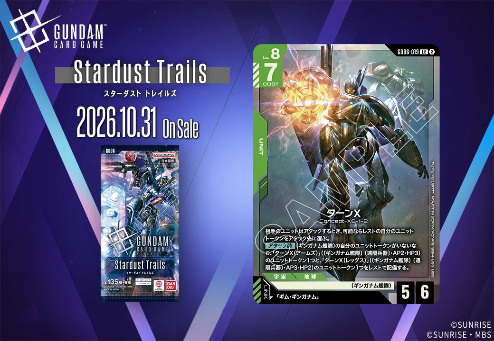

今回は拡張パック「GD06（Stardust Trails）」から、緑のカード2枚をまとめてご紹介します。UNIT「ターンX」（GD06-019）と PILOT「ギム・ギンガナム」（GD06-085）は同日公開で、前者のリンク条件が「ギム・ギンガナム」を指定しているため、そのまま噛み合う組合せセットとなっています。片方だけを引いても条件を満たせない関係のため、2枚を揃えて運用することがそのままリンク成立の前提になる点が、この組合せを評価するうえでの要になります。

ギム・ギンガナム (GD06-085)
| 色 | 緑 | タイプ | PILOT |
| Lv | 5 | コスト | 1 |
| 補正 AP | 2 | 補正 HP | 2 |
| 特徴 | 〔ギンガナム艦隊〕、〔ムーンレイス〕 | ||
効果: 【バースト】このカードを手札に加える。【リンク中】相手のターン中、〔ギンガナム艦隊〕の自分のユニットすべてをAP+1する。
相手のターン中に〔ギンガナム艦隊〕の自分のユニットすべてをAP+1する【リンク中】が主軸のパイロットです。コスト1でAP2/HP2、Lv.5と搭載条件は重めですが、同日公開の「ターンX」とリンクが成立し、その【アタック時】で並ぶ「ターンX(アームズ)」「ターンX(レッグス)」のトークンも〔ギンガナム艦隊〕を持つため、AP+1の対象に含まれます。修整が相手ターン限定である以上、役割は受け側での迎撃寄りとなり、起動・メインでAP+1する「アスピーテ」とは効く局面が分かれるため、併用しても腐りにくい関係です。単体では【バースト】で手札に加わるだけですが、リンク先が用意された環境なら採用理由は明確でしょう。



ターンX (GD06-019)
| 色 | 緑 | タイプ | UNIT |
| Lv | 8 | コスト | 7 |
| AP | 5 | HP | 6 |
| 特徴 | 〔ギンガナム艦隊〕 | ||
| リンク条件 | 「ギム・ギンガナム」 | ||
効果: 相手のユニットはアタックするとき、可能ならレストの自分のユニットトークンをアタック先に選ぶ。【アタック時】〔ギンガナム艦隊〕の自分のユニットトークンがいないなら、「ターンX(アームズ)」(〔ギンガナム艦隊〕〔遠隔兵器〕 AP2・HP3)のユニットトークン1つと、「ターンX(レッグス)」(〔ギンガナム艦隊〕〔遠隔兵器〕 AP3・HP2)のユニットトークン1つをレストで配備する。
Lv.8・COST7でAP5/HP6の緑ユニットです。常時効果により相手ユニットはアタックするとき、可能ならレストの自分のユニットトークンをアタック先に選ぶため、トークンが攻撃の受け皿として機能します。【アタック時】に〔ギンガナム艦隊〕のユニットトークンがいなければターンX(アームズ)とターンX(レッグス)をレストで配備でき、自ら受け皿を用意できる点が噛み合っています。両トークンは〔ギンガナム艦隊〕〔遠隔兵器〕を持つため、アスピーテのAP+1条件である3つ以上の達成にも寄与します。リンク先のギム・ギンガナムは【リンク中】に相手のターン中、〔ギンガナム艦隊〕の自分のユニットすべてをAP+1するため、狙われやすいトークンの反撃力も上がります。
関連カード
-
 アスピーテ(GD06-124)NEW緑系 — 同色・共通特徴: ギンガナム艦隊（新カード）
アスピーテ(GD06-124)NEW緑系 — 同色・共通特徴: ギンガナム艦隊（新カード） -
 メリーベル・ガジット(GD06-087)NEW緑系 — 同色・共通特徴: ギンガナム艦隊、ムーンレイス（新カード）
メリーベル・ガジット(GD06-087)NEW緑系 — 同色・共通特徴: ギンガナム艦隊、ムーンレイス（新カード） -
 バンデット(メリーベル機)(GD06-022)NEW緑系 — 同色・共通特徴: ギンガナム艦隊、ムーンレイス（新カード）
バンデット(メリーベル機)(GD06-022)NEW緑系 — 同色・共通特徴: ギンガナム艦隊、ムーンレイス（新カード） -
 ターンX(GD06-019)NEW緑系 — 同色・共通特徴: ギンガナム艦隊（新カード）
ターンX(GD06-019)NEW緑系 — 同色・共通特徴: ギンガナム艦隊（新カード） -
 ターンX(トップ)(GD06-021)NEW緑系 — 同色・共通特徴: ギンガナム艦隊（新カード）
ターンX(トップ)(GD06-021)NEW緑系 — 同色・共通特徴: ギンガナム艦隊（新カード） -
 ギム・ギンガナム(GD06-085)NEW緑系 — 同色・共通特徴: ギンガナム艦隊（新カード）
ギム・ギンガナム(GD06-085)NEW緑系 — 同色・共通特徴: ギンガナム艦隊（新カード）